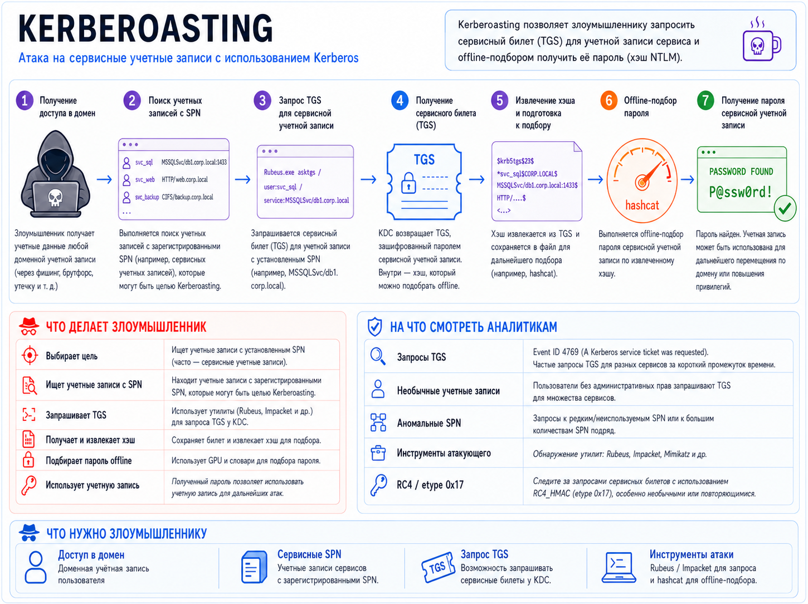

Kerberoasting
Kerberoasting - это атака на Kerberos в Active Directory, при которой злоумышленник получает TGS-билет для учётной записи с SPN и затем офлайн подбирает пароль по зашифрованной части билета.
Основные типы Kerberoasting
1. Классический Kerberoasting
Классический Kerberoasting - запрашиваются TGS для существующих SPN, после чего выполняется офлайн-подбор пароля сервисной учётной записи.
2. Targeted Kerberoasting
Targeted Kerberoasting - атакующий выбирает конкретные аккаунты: например, сервисные учётки с высокими привилегиями или слабой парольной политикой.
3. RC4 Kerberoasting / Encryption downgrade
RC4 Kerberoasting / Encryption downgrade - попытка получить билет с шифрованием RC4-HMAC = etype 23 = 0x17, поскольку такие хэши обычно существенно удобнее для перебора, чем современные AES-варианты.
4. AES Kerberoasting
AES Kerberoasting - работа с TGS, зашифрованными AES128/AES256 (etype 17/18). Принцип тот же, но офлайн-подбор обычно вычислительно дороже.
5. Kerberoasting через созданный/добавленный SPN
Kerberoasting через созданный/добавленный SPN - необходимо право, позволяющее изменять servicePrincipalName объекта. Например, GenericAll, GenericWrite, соответствующий WriteProperty или подходящее validated write право на SPN. Эту разновидность часто называют targeted Kerberoasting via SPN manipulation.
6. Kerberoasting без специализированных offensive-инструментов
Kerberoasting без специализированных offensive-инструментов - технически это та же атака, но запросы Kerberos формируются напрямую через протокол, что может менять телеметрию и способы обнаружения.

Этапы атаки
1. Получение доступа в домен
Злоумышленник получает учётные данные любой доменной учётной записи (через фишинг, брутфорс, утечку и т.д.) и аутентифицируется.
2. Поиск учётных записей, обладающих SPN
Выполняется поиск учётных записей с зарегистрированными SPN.
Например, при помощи LDAP с использованием запроса:
(&(objectClass=user)(objectCategory=user)(servicePrincipalName=*))
Также есть PowerView, GetUserSPNs.py из impacket.
3. Запрос и получение TGS для учётной записи с установленным SPN
Можно использовать Rubeus, Impacket GetUserSPNs.py, Invoke-Kerberoast
4. Извлечение хэша TGS и оффлайн подбор
Хэш извлекается из TGS и сохраняется в файл для offline-подбора пароля. Можно использовать hashcat, John the Ripper. После получения пароля, учётная запись может быть использована для дальнейшего перемещения по домену или повышения привилегий.
Причины, по которым Kerberoasting вообще возможен
1. При запросе TGS, контроллер домена (DC) не занимается авторизацией
То есть DC не проверяет, есть ли у пользователя, который запрашивает TGS, права на доступ к этому сервису. Поэтому можно запросить TGS ко всем SPN в домене.
2. TGS шифруются с использованием секрета сервисной учётной записи
Это позволяет восстановить пароль сервисной учётной записи при условии, что пароль недостаточно стойкий.
Злоумышленников интересуют SPN, ассоциирующиеся с учётными записями пользователей, а не компьютеров, так как компьютерные УЗ (как правило) имеют очень стойкий пароль, сгенерированные не вручную
На что смотреть?
1. Аномальное количество запросов TGS на DC
Event ID = 4769
Чаще всего в связке с:
Ticket Encryption Type = 0x17 (RC4-HMAC)
2. Большое количество уникальных SPN за короткий промежуток времени
3. Запросы TGS к нетипичным или редко используемым SPN
4. Аномальный источник запросов
Запросы TGS с пользовательского хоста могут вызвать больше подозрений, чем запросы с сервера
Способы митигации:
1. Перевод сервисов на gMSA
Перевод сервисов на gMSA (Group Managed Service Accounts) там, где это возможно. У gMSA длинные случайные пароли, которыми управляет AD и которые автоматически меняются.
2. Длинные случайные пароли
Для обычных сервисных учётных записей использовать очень длинные случайные пароли с высокой энтропией, желательно 25-30+ символов.
3. Убирать RC4 и использовать AES
По возможности отключать RC4 для Kerberos и поддерживать:
AES128 - 0x11AES256 - 0x12
При этом важно учитывать, что AES не устраняет Kerberoasting полностью. TGS всё равно можно получить и пытаться подобрать пароль offline, просто это значительно менее выгодно злоумышленнику.
4. Минимизировать привилегии сервисных учётных записей
Сервисная учётная запись не должна быть:
Domain Admin;Enterprise Admin;- локальным администратором на нескольких серверов без необходимости;
- членом других высокопривилегированных групп.
В идеале компрометация одной такой учётки должна давать доступ только к конкретному сервису.
5. SPN honeypot
SPN honeypot - один из эффективных способов детектирования Kerberoasting, заключающийся в создании подложных учётных записей, обладающих SPN, которые не используются.
В обычной жизни клиенты Kerberos не будут запрашивать TGS для подложной SPN. Поэтому, если в журнале Security на DC появится событие 4769 для этой учётной записи - то это должно наводить на соответсвующие мысли.